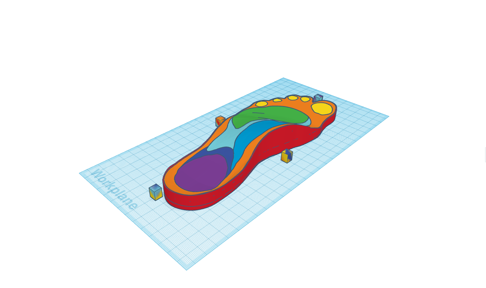
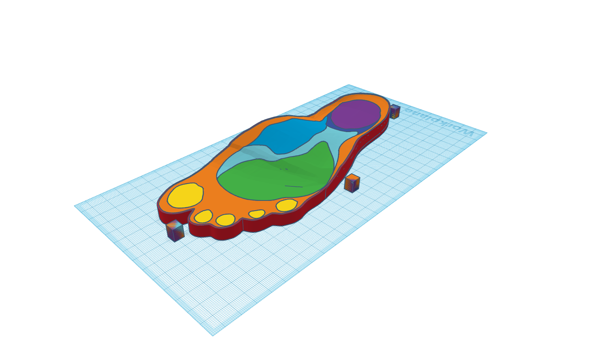
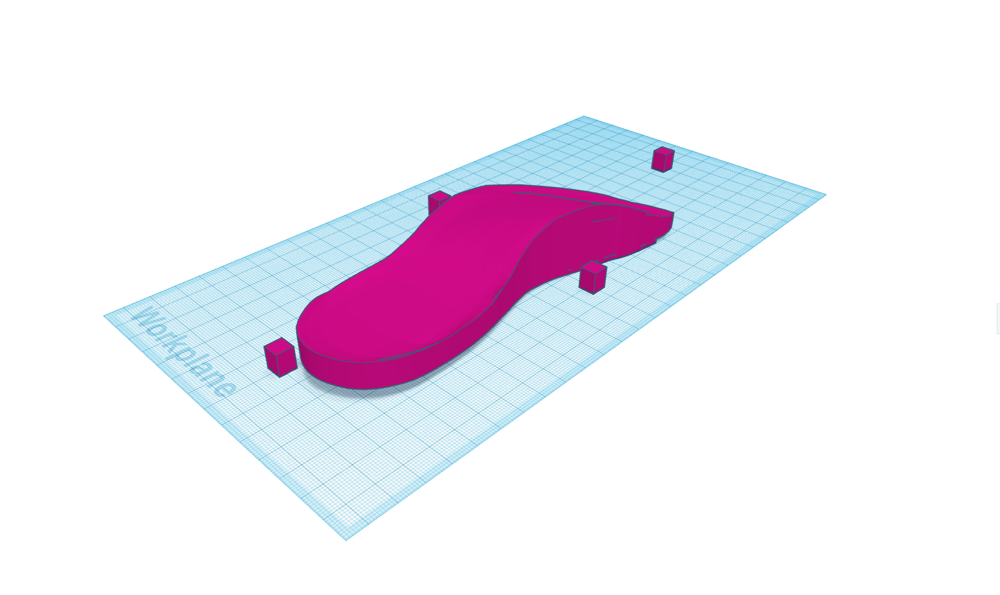
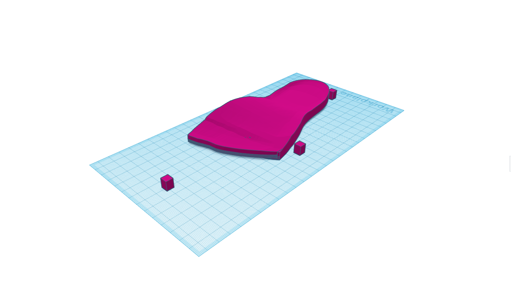
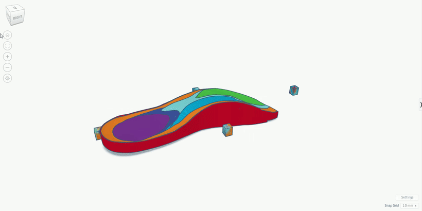
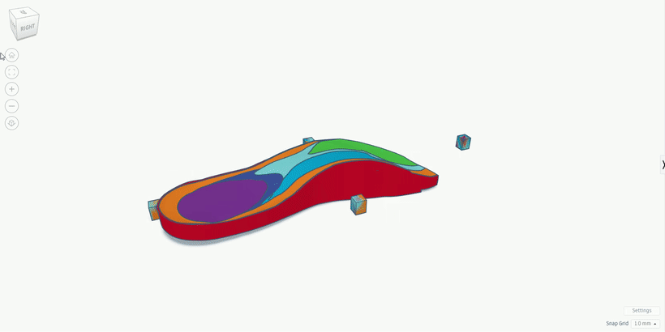

This is a quick and dirty website to showcase the development of my custom variable density orthotic insoles. It will act as a dump, and a blog of sorts to document my progress on the project. Best Viewed on computer
 
(all info on this site are excerpts from my development log)
I found a model on Thingiverse called "Variable Density Insole" by Gyrobot at
https://www.thingiverse.com/thing:581443/files
This piqued my interest as an interesting concept for an affordable, customisable way for me to create
my own orthotic insoles.
The zones highlighted in different colours are not based on any actual research, more simply how I would
expect different areas would need different amounts of support
 
The Purple shape is my prototyping of the arch support
 

test
test
test
test
test
test
Education
I have attended 4 locations of schooling in my educative years. A preschool, primary school, and two secondary schools.
- First off, I went to Playcentre New Plymouth for two years I think, from the ages of 3 to 5.
- Seccondly, I attended Vogeltown primary school for six years, of which I remember little of what I did, and only retained three proper friends, but altogether, it was fun.
- After year six, came year 7. I chose to go to Francis Douglas Memorial College, and for two miserable years, I made two friends, kept neither of them, and hated the school in general.
- Currently I consume my education through the means of Spotswood College,where I have made many friends, and am getting ready for the outside world. I have been here since year nine, and I am currently at the start of year 12.